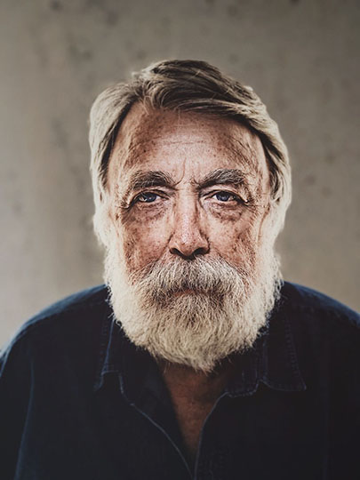
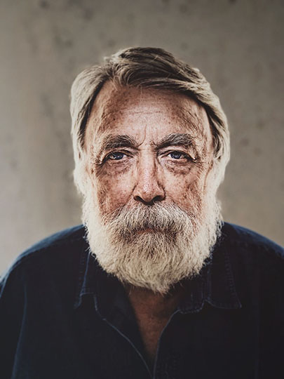
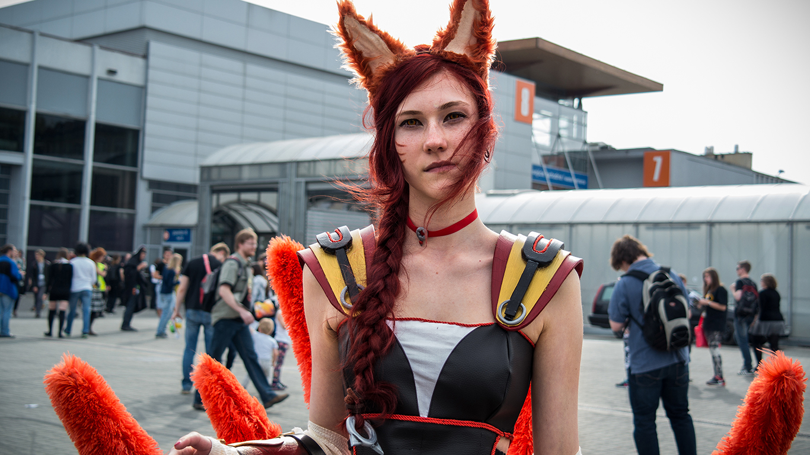
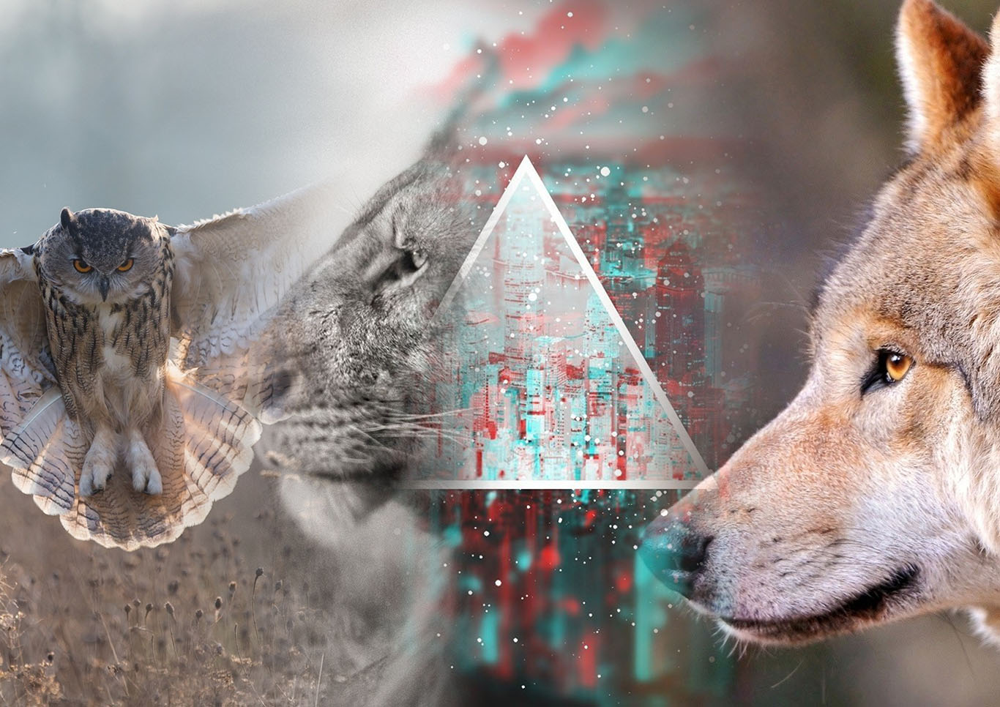
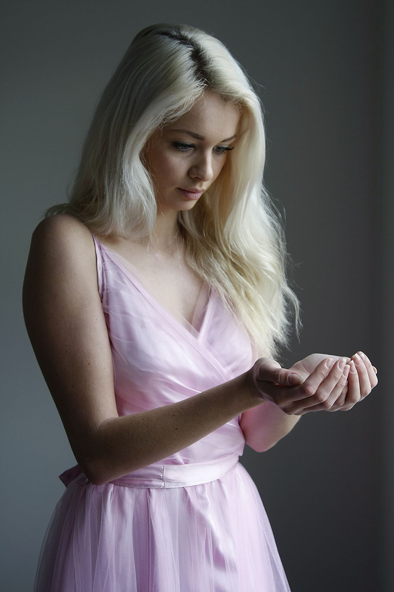
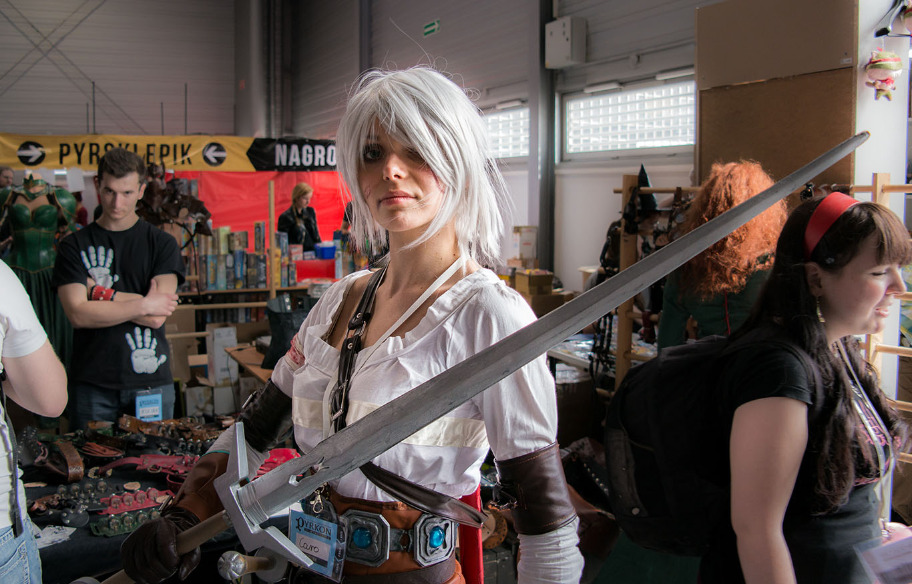
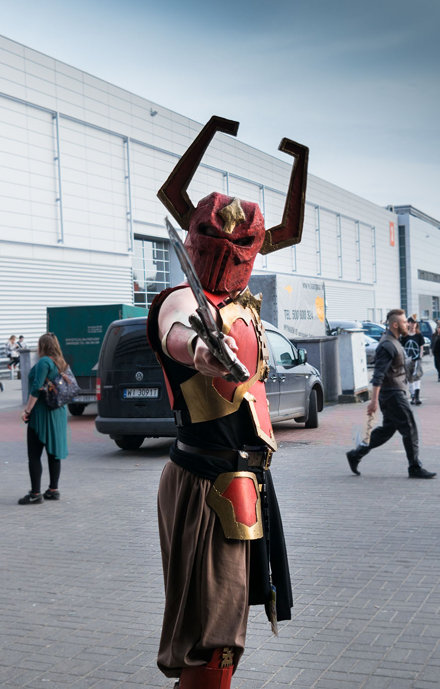
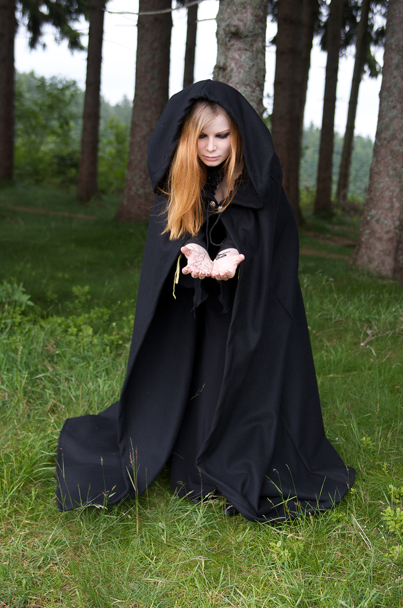
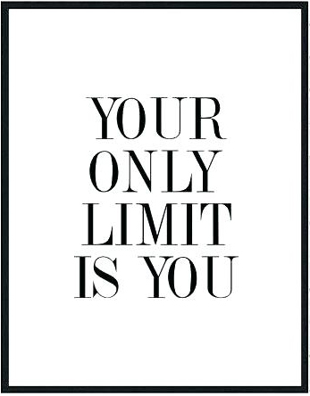

more soon
Manipulations
Photoshop, manipulations, fantasy, different dimension
" Storks invaded "


" The quick brown fox jumps over the lazy dog "
- 

" Concrete Jungle "
- 

" The only way to get rid of thinking "
- 

" Various knowledge "
- 

" The sacred beauty "

" You have been judged "
- 

" A local forest witch "
- 
Hi, I do photography for fun, it's just a hobby to me. So here is equipment that I shold be used by everyone
In the wardrobe
Camera
Canon 80d - a camera for mid level. I love it. For those who have some budget, but aren't thinking to buy the best stuff. For practice - it's the best.
A weapon
Tripod
Highly recommended by every photographer. For still objects like landscapes or portraits. Also for longer exposures - you will need that unless you are able to hold still the camera for... n seconds. Remember to turn off the stabilisation option.
Extra help
Speedlight
Flash - It gives you totally a different point of view. It's another level in taking pictures. When you buy a speedlite, you start to treat photography a little bit more serious. You start to think creatively, more forward, more powerful. And with an umbrella you are invincible.
Flashing light
General tips & rules I follow
- Don't bother yourself what others think about you.
- Be very positive in-field.
Go out of your comfort zone
- Sometimes side things happening around might be more interesting.
Focus on surroundings not only on main event
- Never say 'next time', because next time there won't be the same weather, lightning, certain people, atmosphere, and all other things that will not come second time.
No excuses
- Some certain scenes may be more touching and gripping.
- Those are the moments when you are expanding your creative horizons.
- Show a different side of places that you visit.
Sometimes the ugliness tells more of a story than the beauty
- Sometimes following local advices about what to see may vary and might not be so interesting.
- Well known places have special values but in majority in general.
- Don't look for places like "most beautiful places on Earth", or "Best places to visit in Europe".
Be skeptical to well known places
